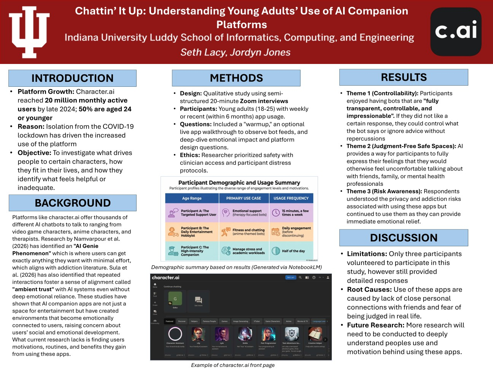
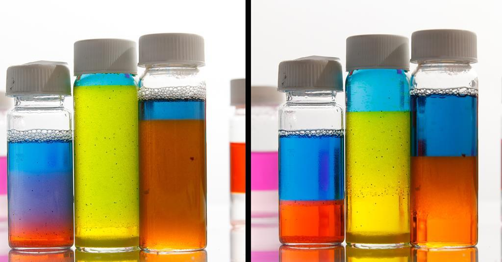

Hello! I am currently a Cybersecurity & Global Policy student at Indiana University Bloomington. My love for Cybersecurity started when I was in High School and has only grown since then. I took the Cybersecurity course at Area 31 Career Center. I earned a associates degree level education in this field and only hope to continue growing in this exciting industry thorughout my college career. I hope to join the policy makers and federal agencies to regulate the dangerously growing technology of AI and stop it before it becomes a threat.

This is a research project I worked on the summer of 2026. I worked with a professor from the Luddy School of Informatics to better understand the implications of AI companions on young adults. I investigated what drives people to the app, how they use in in their daily lives, and how users identify what feels helpful or unhelpful from this app.

This is a science experiment I will conduct for the WonderLab's STEM Saturday's event. This project is part of a requirement for EDUC-U 212 "Stemming Into IU". This experiment will be presented in front of Wonderlab visitors and we will have guests do this experiment alongside us and they will be able to bring a cool colored bottle of water. This experiment demonstrates the principles of light refraction and color separation.
Layout by Bootstrap.
Fade-in Animation found and tweaked from cssShowcase.
Text scroll found from this site.
Seth Lacy